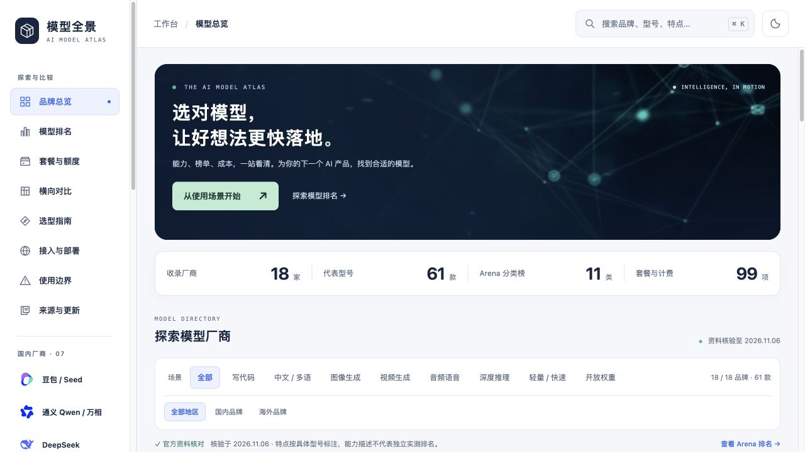

搜索与筛选
按品牌、型号和使用场景查找模型，URL 哈希保存当前视图与筛选条件。
一个整理国内外大模型资料的网站，可查型号、功能、榜单、价格和使用额度。

在模型全景网页里搜索、筛选型号，或打开对比视图。
资料截至 2026-11-06，价格、额度和排名可能已有变化。
把分散的模型资料放到同一页，比较时能看到来源、核验日期和缺失项。
按品牌、型号和使用场景查找模型，URL 哈希保存当前视图与筛选条件。
并列查看模型特点、使用方案和分类榜摘录，保留指标与更新日期。
网页和下载文件由同一组 JSON 生成，方便核对和维护。
无需后端或 API 密钥，资料由人工核验后更新。
未公开的价格或额度留空并说明，避免被读成免费或无限使用。
各分类榜保留自己的指标，不合成总排名；模型、排名和套餐分别记录核验日期。
静态网站源码已公开，展示人工核验的资料快照。
HTML / CSS / JavaScript / Node.js / 静态 JSON / GitHub Pages